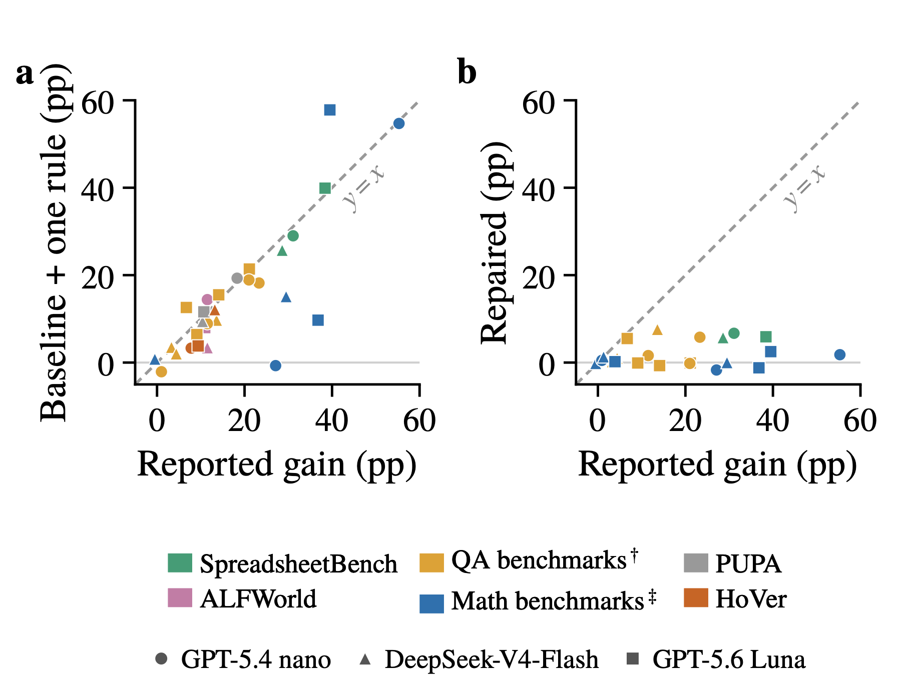
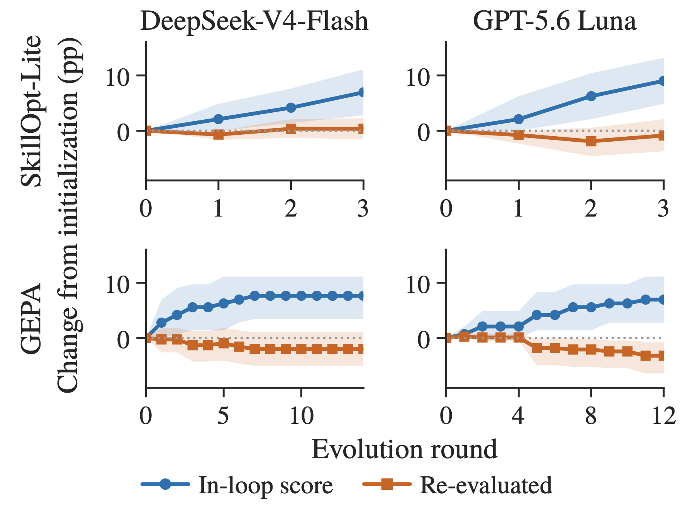

Before You Read
- Why
We audit the measurement instrument, not the ambition of self-improving agents. Method rankings flip across studies, so we ask a foundational question: when an agent edits its prompts, skills, or harness, can standard evaluation reliably tell a true improvement from a lucky run?
- Core conclusion
The bottleneck is identifying true improvements under noise—not proposing them.
- IntuitionVar(Ŷ) = σ² + τ²
Frozen-weight edits act through noisy multi-turn rollouts. Rollout noise (σ²) and run-to-run drift (τ²) set an evaluation resolution floor; when gains sit below it, greedy acceptance harvests luck instead of better skills.
- Not claiming
We are not rejecting agent evolution or questioning prior researchers' good faith. Proposers work, and even shortcuts confirm that evolution optimizes whatever signal clears the noise floor. Progress calls for four shifts:
- Low-variance process checks: programmatic behavioral diagnostics show 13×–57× less noise than binary verdicts.
- Component-wise evaluation: benchmark proposers (Quality@K vs. null) separately from selectors.
- Resolution-aware reporting: publish σ̂ and τ̂ alongside point scores.
- Higher-resolution regimes: more validation rollouts or deterministic program-environment feedback.
Introducing Our Work
Why does evolution stall on some benchmarks while claiming +10–40 pp elsewhere? Methods trade wins across papers—stalling on Terminal-Bench while jumping elsewhere. The Resolution Hypothesis: evolution accumulates gains when they exceed evaluation resolution, and drifts on noise when they fall below it.
Proposers find real gains
Candidate pools hold artifacts that improve held-out quality beyond luck.
Selectors sit near chance
Execution scores and trajectory LLM judges fail to rank candidates reliably.
Noise accumulates over rounds
Greedy acceptance inflates in-loop scores while runs diverge.
Conclusion
- 01
Single-run rankings rest on luck.
Across 171 results in 9 papers, the 3.4 pp median margin sits below single-run SD on >60% of pairs; best-of-4 accuracy on Terminal-Bench is 33% (random 25%).
- 02
Reported 10–40 pp gains reflect evaluation shortcuts.
Auditing 12 benchmarks × 3 models, a one-sentence rule recovers a median 90% of gains >3 pp; repairing the evaluation drops gains from 17.6 to 0.8 pp.
- 03
Proposers find real gains; selectors sit at chance.
Quality@100 reaches 61.8% (+3.4 pp over null; shared skills span >15 pp), while 1-rollout (49.7%), 2-rollout (48.6%), and LLM judges (45.4%–49.0%) sit near 50%.
- 04
Greedy selection errors accumulate across rounds.
In-loop validation rises +6.9 to +9.0 pp while 8× validation re-evaluation shifts +0.35 to −3.21 pp, and τ̂² grows to 4.2–24.5 pp².
Questions We Expect
Q01Are you claiming agent evolution doesn't work, or that prior papers were flawed?
Neither—proposers genuinely work, and prior results reflect an unmeasured noise floor rather than bad faith. Tested proposers produce real held-out improvements (Quality@100 reaches 61.8%), and single-run reporting became standard before rollout variance (Var(Ŷ) = σ² + τ²) was quantified.
Q02High variance makes it hard to iterate or identify improvements—isn't that just common sense?
In principle, yes—yet in practice the community has operated on the opposite premise, and the severity is surprising.
- Standard reporting ignores it: across 171 results in 9 agent-evolution papers, 0 report variance (σ̂ or τ̂) and only 6 average >1 evolution run, treating 3.4 pp margins as reliable rankings.
- Intuitive selectors still fail: 1-rollout (49.7%), 2-rollout (48.6%), and LLM trajectory judges (45.4%–49.0%, r = 0.054) all sit near chance even when proposers yield +3.4 pp Quality@100 headroom.
- Why this surprises researchers: even knowing noise exists in theory, the community rarely anticipated how severely it bites in practice—that true skill gains already sit below current selector resolution.
Q03Our method achieved +20–40 pp on a published benchmark—why call that an evaluation shortcut?
Finding a +20–40 pp lever is real optimization, but it reflects a benchmark-wide convention rather than fine-grained task skills. Under frozen weights, one global rule—like matching a strict parser or benchmark variant—lifts most tasks at once (one sentence recovers a median 90% of gains >3 pp). After evaluation repair, median gains drop from 17.6 to 0.8 pp.
Q04What about Meta-Harness, AHE, ReasoningBank, GEPA, or SkillOpt—are all 7 methods equally affected?
The bottleneck is shared across both text-artifact and harness families whenever step gains fall below resolution. Across 4 text methods (GEPA, SkillOpt-Lite, Trace2Skill, ReasoningBank) and 3 harness methods (HarnessLens, Meta-Harness, AHE) on 6 models (150 configs), no single proposer is singled out—all hit sparse terminal feedback when ranking +1–3 pp refinements.
Q05Why test 1–2 rollouts or LLM judges? Wouldn't averaging more rollouts fix selection?
Standard loops use 1–2 rollouts to stay tractable; scaling to 16× validation helps, at 16× inner-loop cost. Under standard budgets, execution (49.7% / 48.6%) and LLM judges (45.4%–49.0%) sit near a coin flip. Raising validation to 16× lifts mean test score 61.4% → 64.4% and best run 64.8% → 72.7%, motivating cheaper low-variance diagnostics.
Q06Isn't Quality@K rising with K just the “winner's curse” over noisy scores?
- Equal-Quality Null: subtracts out the exact max-of-K curve expected if all 100 skills shared identical true quality.
- Disjoint held-out tasks: across 10 disjoint test tasks (16 rollouts each), Quality@100 reaches 61.8% (+3.4 pp above null).
- Single shared-skill spread: across 160 test rollouts per skill (2h budget), single skills span >15 pp (57.5% best vs. 49.2% mean and 41.9% weakest).
Q07Deterministic program evolution (e.g., KernelAgent, AlphaEvolve, ARC-AGI) compounds steadily—does that contradict you?
It supports the Resolution Hypothesis by structurally reducing evaluation noise. Evolving task-specific code enables cheap parallel re-evaluation of deterministic programs and richer runtime diagnostics, allowing incremental gains to clear resolution—unlike frozen-weight text/harness edits scored by stochastic multi-turn rollouts.
Q08Will stronger frontier models naturally solve evaluation resolution?
Across 6 models up to Kimi-K3, GLM-5.2, GPT-5.6, and DeepSeek-V4-Flash, noise shrinks mainly where benchmarks saturate. On ALFWorld, stronger models show lower noise only near the ceiling where little headroom remains. On unsaturated Terminal-Bench, median evaluation noise stays around 3.5–4.0 pp across model tiers.
Q09What should benchmark authors, method builders, and reviewers do differently now?
- Report σ̂ and τ̂: publish evaluation noise and run-to-run variance alongside point scores.
- Decouple proposer from selector: score proposers via Quality@K vs. null, and selectors via selected-artifact curves on fixed pools.
- Use low-variance behavioral checks: programmatic intermediate diagnostics cut evaluation noise by 13×–57×.
Four Steps Through the Evidence
Follow the argument step by step—from method-ranking instability to why evolution loops stall—and expand any explorer to test our empirical numbers yourself.
Single-run rankings sit below resolution
Across four audited benchmarks, >60% of same-benchmark method pairs differ by less than one single-run SD—picking the best of four methods on Terminal-Bench is right only 33% of the time (random: 25%).

Interactive Explorer · Run budget calculator
Large reported gains come from evaluation shortcuts
Across 12 benchmarks × 3 models, a one-sentence rule reproduces a median 90% of gains >3 pp; repairing the evaluation drops median gains from 17.6 to 0.8 pp.

Interactive Explorer · Gain audit (12 benchmarks × 3 models)
Proposals hold real gains; selection sits at chance
Quality@100 climbs to 61.8% (+3.4 pp above the equal-quality null; shared skills span >15 pp), yet execution selectors (49.7% / 48.6%) and LLM judges (45.4%–49.0%) stay flat near 50%.

Interactive Explorer · Proposal & Selection pools
Per-task held-out success (%) at K = 100
Noise accumulates into optimism drift and variance diffusion
Greedy acceptance harvests upward noise: in-loop scores rise +6.9 to +9.0 pp while 8× re-evaluation shifts +0.35 to −3.21 pp, and τ̂² grows to 4.2–24.5 pp².


Interactive Explorer · Optimism drift & variance diffusion
Inspecting Concrete Skills
Good evolved skills exist—exact-identifier and tokenizer-fidelity rules that transfer across tasks.
Inspect artifacts · seed-027 / seed-099 / seed-058
BibTeX
@article{zeng2026resolution,
title={The Resolution Hypothesis: Agent Evolution's Key Is Identifying Improvements},
author={Zeng, Yuanhao and Lan, Shaocheng and Lu, Ao and Yan, Kuang and Lin, Heng and Xu, Xinang and Li, Yexin and Shan, Ruo and Ren, Kan},
journal={arXiv preprint},
year={2026}
}